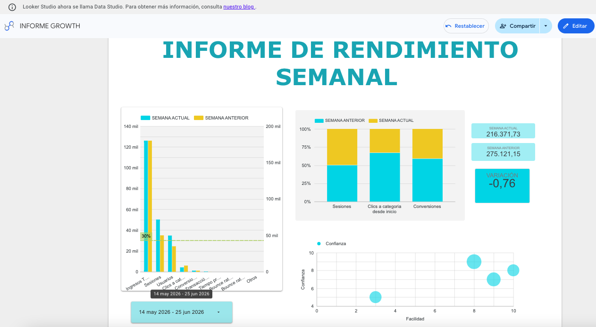

Caso de estudio · Meta Ads
De muchos leads a leads que sí compran: optimización de calidad en Meta Ads
Una cuenta con muchas conversiones pero pocos leads realmente útiles para el equipo comercial — encareciendo el CAC y volviendo impredecible el resultado de las campañas.
Este proyecto se centró en mejorar la calidad de los contactos generados a través de Meta Ads (Facebook e Instagram) y optimizar el costo por lead.
El problema
La cuenta venía con muchas conversiones pero pocos leads realmente útiles para el equipo comercial, lo que encarecía el CAC y hacía poco predecible el resultado de las campañas.
El trabajo aplicado
Revisé la estructura de campañas y audiencias, ajustando segmentaciones, mensajes y creatividades para alinearlos mejor con el perfil de cliente ideal. Incorporé eventos de conversión mejor definidos y filtros en los formularios para reducir registros poco relevantes, y sumé campañas de remarketing dirigidas a usuarios que habían mostrado interés pero no habían completado el registro.
A partir de un ciclo continuo de análisis de métricas clave (CPL, tasa de conversión de formulario y calidad percibida por el área comercial), fui priorizando las combinaciones de anuncios y audiencias que traían leads con mayor probabilidad de avanzar en el embudo.
El resultado
Un aumento en la proporción de leads calificados, una reducción del costo por lead y campañas más eficientes, enfocadas en contactos que realmente tenían potencial de convertirse en clientes.

¿Tu cuenta de Meta Ads genera muchos leads pero pocas ventas?
Puedo revisar tu segmentación, tus eventos de conversión y tu embudo de remarketing para priorizar los leads que sí tienen potencial real de compra.
Hablar con Daniel por WhatsApp